Opencv_learning_Python(1)
Opencv in Python(1)
PS: Opencv in Pycharm 的合并重置版本
在Pycharm中导入opencv
笔者被C++实现的opencv干到心态炸裂了，所以这里先整一篇基于python的opencv的博客。
在pycharm中导入opencv很容易：只需要在Project的setting里给解释器安装上opencv-python库就好了。使用这个程序跑一下看看可不可以读取图像：
#向工程文件下新建一个img文件夹,放好你的图片，我这里放的是test.png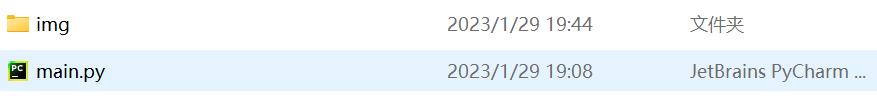
import cv2
img_path="img/test.png"
img=cv2.imread(img_path)
cv2.imshow("Test img can be shown below!",img)
cv2.waitKey(0)
cv2.destroyAllWindows() 跳出这个即为成功！开始你的opencv的欢乐时间！
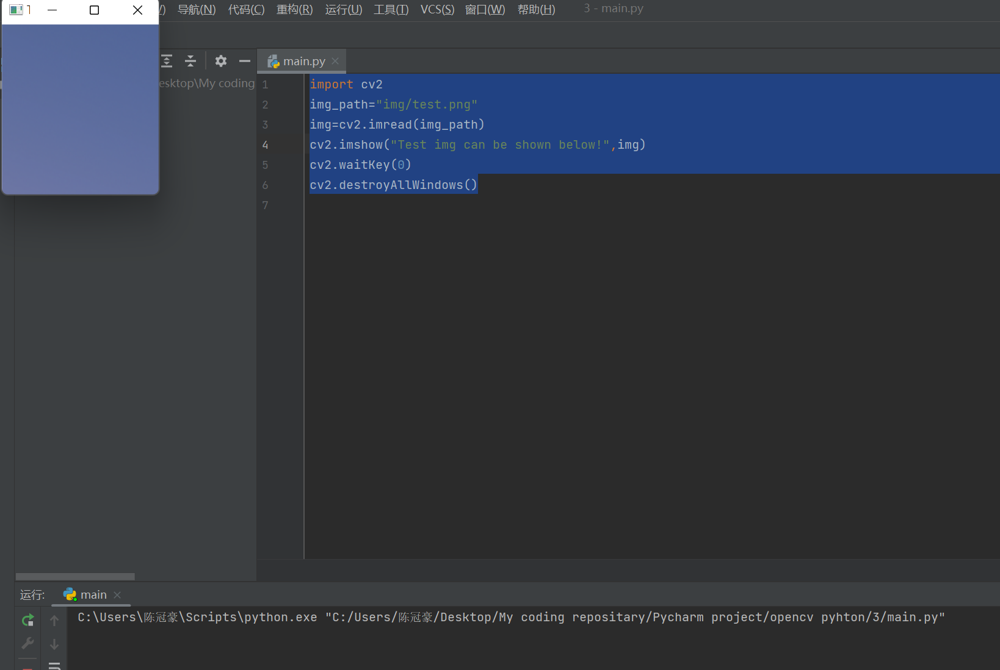
计算机眼中的图片
在计算机眼中，图像由矩阵构成
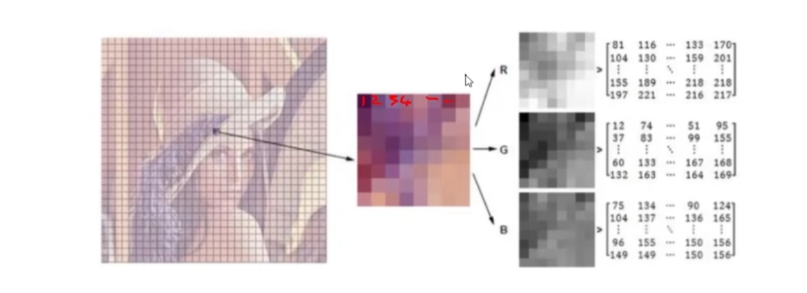
数值的大小表明了图像的亮度，而通道表明了一个颜色：一个R通道上的255表明这是在Red上很亮
下面，我们来介绍一下我们应该怎么读取图像：
import cv2#不同于RGB，我们读取的格式是BGR
import matplotlib.pyplot as plt
import numpy as np
#caution:the input should be the addr of the img
img=cv2.imread("\\imgpath!") 读取的结果是：一个nd array
好抽象：可不可以直接展示图片啊：
cv2.imshow('img',img)
cv2.waitKey(0)
cv2.destroyAllWindows() 我们试一下这个：
import cv2
import showimg as simg
import numpy as np
import matplotlib.pyplot as plt
img = cv2.imread('1.png')
simg.imgshow("1",img)
cv2.waitKey(0)
cv2.destroyAllWindows() 也可以封装一个函数：
def cv_show(nameWindow,img):
{
cv2.imshow(nameWindow,img)
cv2.waitKey(0)
cv2.destroyAllWindows()
} 我们也可以查看一个图片的大小：
img.shape
#(175, 286, 3) 我们可以设置读入的方式：比如说读入灰度图
img=cv2.imread("\\imgpath!"，cv2.IMREAD_GREYSCALE) 保存我们产出的图像
cv2.imwrite('savedfilename',img) 可以计算像素点的个数：
img.size()视频
视频由图像组成，也就是说，我们可以读取视频：
vc=cv2.VideoCapture('videofilepath') 我们是不是读取成功了？这个看如下的代码判断：
if vc.isOpened():
open.frame=vc.read()
else:
open=False
我们来运行的读取视频
while open:
ret,frame=vc.read()
if frame is None:
break
if ret==True:
gray=cv2.cvtColor(frame,cv2.COLOR_BGR2GRAY)
cv2.imshow('result',gray)
if cv2.waitKey(10)&0xFF==27:#按下ESC退出或者视频播放完毕
break
vc.release()
cv2.destroyAllWindows()截取部分图片（ROI）
img=cv2.imgread('Path')
cat=img[0:200,0:200]
cv_show('cat',cat)这样我们就利用切片截取了部分图片了.
颜色通道提取
我们可以分离图片，通过不同的颜色通道提取：
b,g,r=cv2.split(img)这是效果：1，2，3分别代表b,g,r
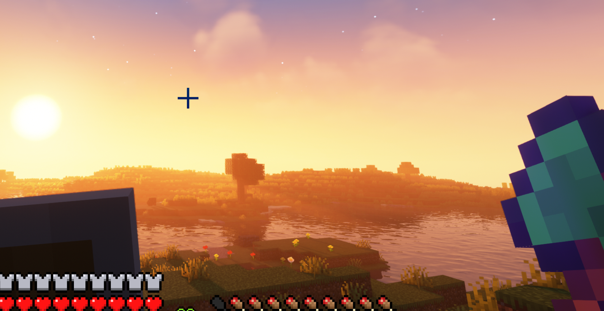
1:
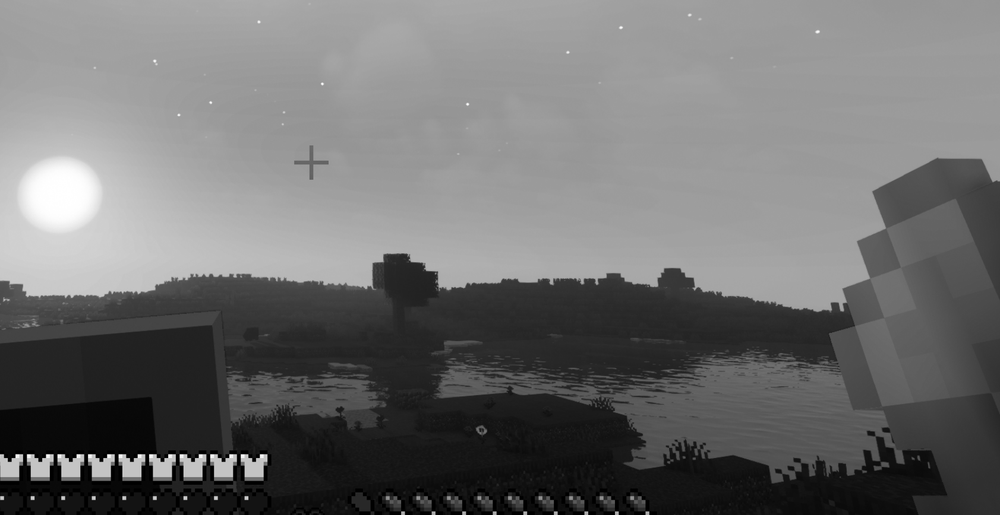
2:
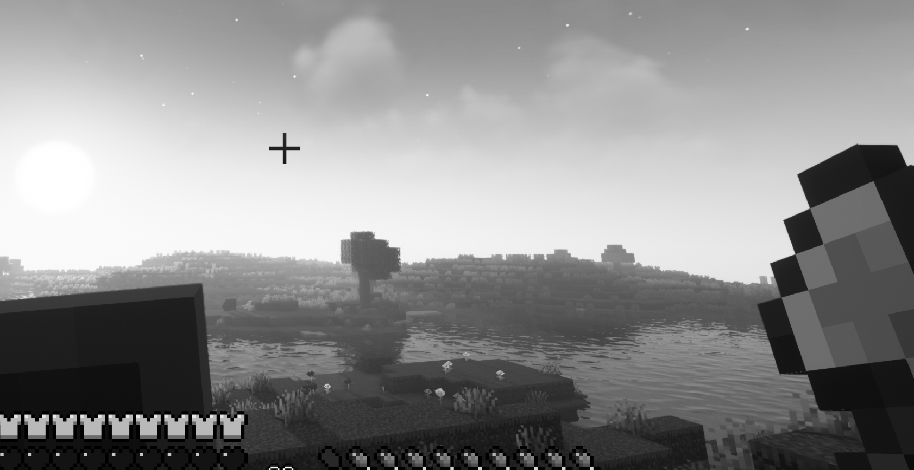
3: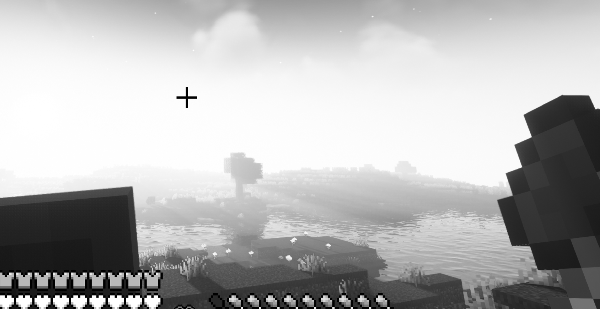
当然也可以合回去：
img=cv2.merge(b,g,r)我们也可以单独保留，直接修改：
#只保留R
cur_img=img.copy()
cur_img[:,:,0]=0
cur_img[:,:,1]=0
cv2.imshow('1',cur_img)边界填充
我们可以扩充图像，通过一些方式来对图像进行扩充：请看这里：
top_size,bottom_size,left_size,right_size=(50,50,50,50)#定位点
replicate=cv2.copyMakeBorder(img,top_size,bottom_size,left_size,right_size,borderType=cv2.BORDER_REPLICATE)
reflect=cv2.copyMakeBorder(img,top_size,bottom_size,left_size,right_size,borderType=cv2.BORDER_REFLECT)
reflect101=cv2.copyMakeBorder(img,top_size,bottom_size,left_size,right_size,borderType=cv2.BORDER_REFLECT_101)
wrap=cv2.copyMakeBorder(img,top_size,bottom_size,left_size,right_size,borderType=cv2.BORDER_WRAP)
constant=cv2.copyMakeBorder(img,top_size,bottom_size,left_size,right_size,borderType=cv2.BORDER_CONSTANT,value=0) 我们得到了五张图像，随后，我们使用imwrite输出图像，同时导入matplotlib的pyplot子库进行观察：
这是总的效果：
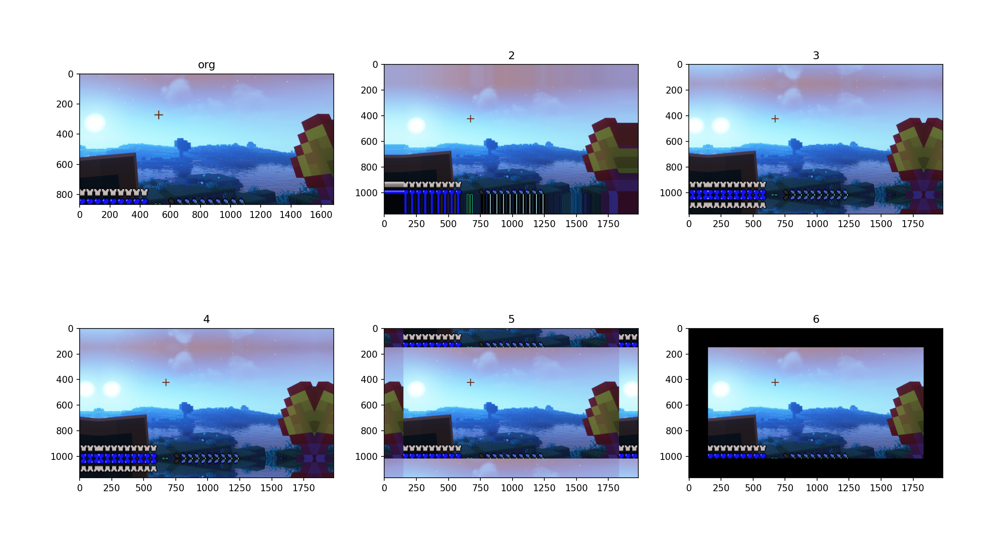
仔细观察：
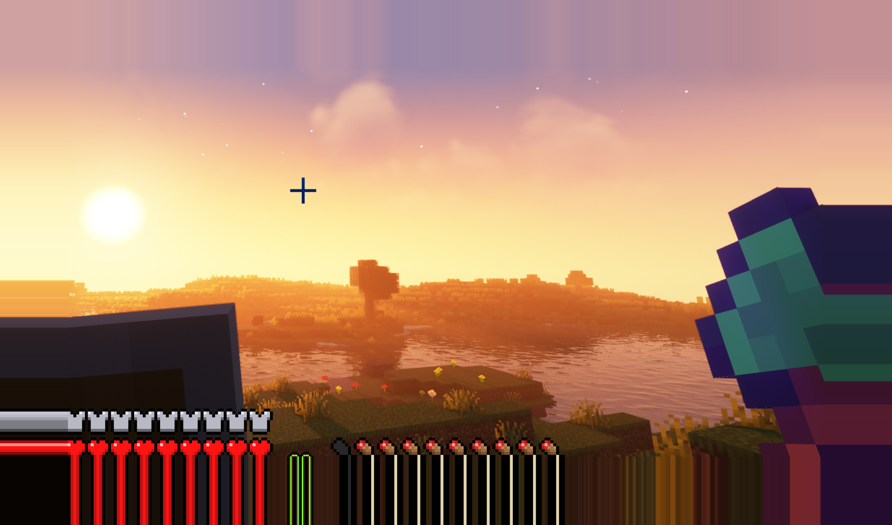
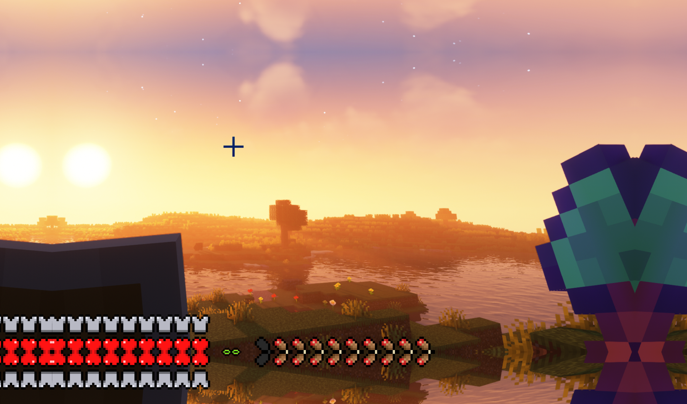
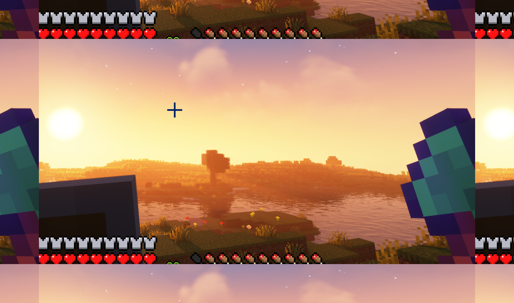
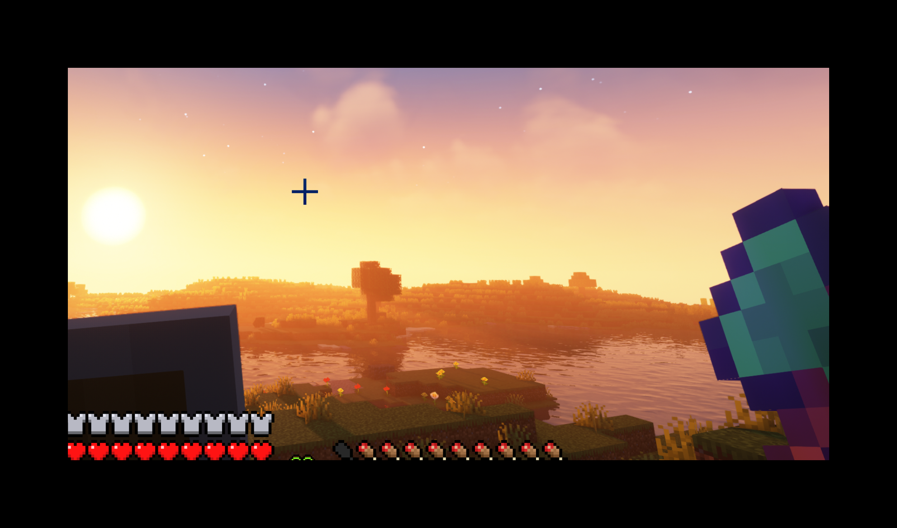
第一张图是展示了
| 方法 | 含义 | 说明 | ||
|---|---|---|---|---|
| replicate | 这个单词是复制的意思：直接复制最边缘的像素 | /// | ||
| reflect： | 对感兴趣的部分进行两边复制： | `fedcba | abcdef | fedcba` |
| reflect101: | 但是是对最边缘的像素为对称轴进行复制: | `gfedcba | abcdefgh | gfedcba` |
| wrap: | 外包装： | `cdefgh | abcdefgh | abcdefg` |
| constant: | 对图像以默认黑值填充 | /// |
对图像进行数值操作
我们可以对numpy进广播操作。人话翻译成C++就是cv2库重载了运算符号，使之我们可以对矩阵进行广义的加法：
img_cat=cv2.imread('cat.jpg')
img_cat_GeneralAdd=img_cat+10;
img_cat[:5,:,0]
img_cat2[:5,:,0] 在控制台上输出就可以发现矩阵里每一个数值都加上了一个10。
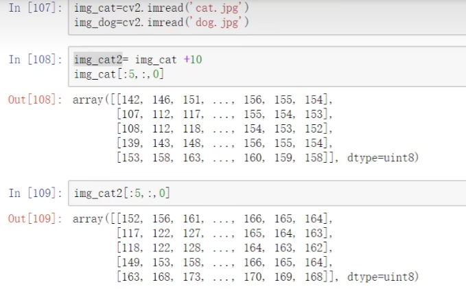
（懒得自己跑，截个图）
那可不可以狭义相加呢？当然可以，结合线性代数的常识，相加的矩阵必须满足大小完全一致。假设我们已经满足了这个前提，直接相加得到的结果是不是就是放到矩阵的值呢？
显然不是！因为RGB有界，不可以超过255.在重载的+中，矩阵的RGB值自动%256，就是除以2256取它的余数放到矩阵里。那还有别的加法吗？有：使用方法add，传入cv2.add(img_cat,img_cat2)就可以了，达到255之后就不会取模，只会停在255不动
图像叠加
我们也可以对图像进行叠加。但是注意，我们首先要调整图像大小一致：
img_cat.shape
img_dog=imread(path)# path是路径
img_dog=cv2.resize(img_dog,(/*size required to resize*/))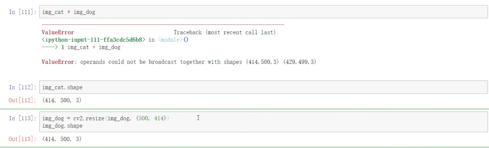
同样的还有其他resize方法：
required_pic=cv2.resize(img_required_resize,(0,0),fx=1,fy=3) 这是个什么玩意呢？指的是我们依照某个点把图像在X轴上拉长3倍数，Y轴不变。
现在，我们使用addWeighted来叠加图像，以混合图片特征。
res=cv2.addWeighted(img_cat,0.4,img_dog,0.6,0)
#img_cat*0.4+img_dog*0.6+0//最后一项是亮度提升图像阈值
我们可以使用一些参数，对图像进行有条件的处理
ret,dst=cv2.threshold(src,thresh,maxval,type)| 参数 | 备注 |
|---|---|
| src | 输入，只能输入单通道图像，通常是灰度图 |
| dst | 输出图 |
| thresh | 执行阈值 |
| maxval | 超过或小于阈值后所赋予的值 |
| type | 方法 |
type方法如下所示
| 参数 | 说明 |
|---|---|
| cv2.THRESH_BINARY | 超过阈值的取maxval,否则取0 |
| cv2.THRESH_BINARY_INV | 反过来 |
| THRESH_TRUNC | 大于阈值的设置成阈值 |
| THRESH_TOZERO | 大于阈值的不变，否则设置成0 |
| THRESH_TOZERO_INV | 反转 |
我们依旧使用matplotlib的pyplot库放送一下
import cv2
import matplotlib.pyplot as plt
img=cv2.imread('2.png')
ret,thresh1=cv2.threshold(img,127,255,cv2.THRESH_BINARY)
ret,thresh2=cv2.threshold(img,127,255,cv2.THRESH_BINARY_INV)
ret,thresh3=cv2.threshold(img,127,255,cv2.THRESH_TRUNC)
ret,thresh4=cv2.threshold(img,127,255,cv2.THRESH_TOZERO)
ret,thresh5=cv2.threshold(img,127,255,cv2.THRESH_TOZERO_INV)
titles=['Original Image','BINARY','BINARY_INV','THRESH_TRUNC','TOZERO','TOZERO_INV']
images=[img,thresh1,thresh2,thresh3,thresh4,thresh5]
for i in range(6):
plt.subplot(2,3,i+1),plt.imshow(images[i],'gray')
plt.title(titles[i])
plt.xticks([]),plt.yticks([])
plt.show()
看看：
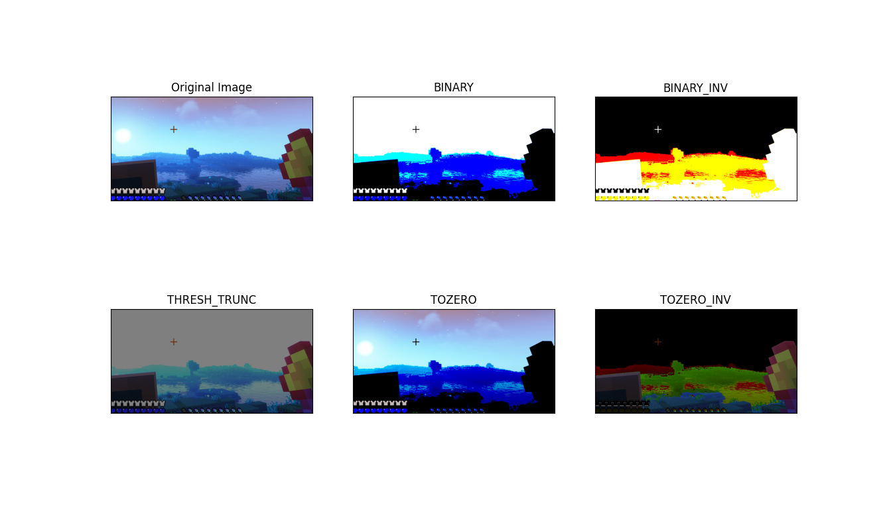
腐蚀操作
对于这样的一些图片：
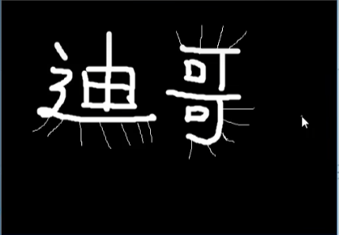
我们可以使用腐蚀操作来钝化特征：删除掉一些边界的像素点（置黑色）。其中：腐蚀的大小，范围是由kernel决定的。在Python中，我们需要这样指定一个核：
kernel=np.ones((5,5),np.uint8) 还是需要指定一个迭代次数的参数，这行代码完成了这样的工作：
erosion=cv2.erode(img,
kernel,
iterations=1)#迭代次数我们首先看看效果怎么样：
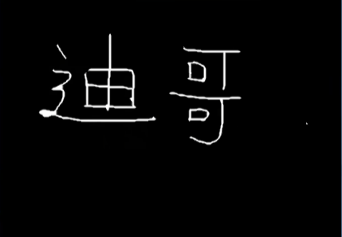
可以看到，腐蚀核在检测到边界条件的时候（白转黑and黑转白）自动将这些像素点填充成黑色，除非核内的像素点都是统一的，否则都会腐蚀！
可以来点控制变量！比如说指定不同的腐蚀核来观察效果
import cv2
import numpy as np
path="1.png"
img=cv2.imread(path)
kernel33=np.ones((3,3),np.uint8)
kernel55=np.ones((5,5),np.uint8)
erosion33=cv2.erode(img,kernel33,iterations=1)
erosion55=cv2.erode(img,kernel55,iterations=1)
res=np.hstack((img,erosion33,erosion55))
cv2.imshow("comp",res)
cv2.imwrite("Kernel Diff compararison.png",res)
cv2.waitKey(0)
import cv2
import numpy as np
from matplotlib import pyplot as plt
path="1.png"
img=cv2.imread(path)
kernel33=np.ones((3,3),np.uint8)
kernel55=np.ones((5,5),np.uint8)
erosion33=cv2.erode(img,kernel33,iterations=1)
erosion55=cv2.erode(img,kernel55,iterations=1)
imgs_ero1=[img,erosion33,erosion55]
titles=['Original','3 times 3 ','5 times t ']
for i in range(3):
plt.subplot(1,3,i+1),plt.imshow(imgs_ero1[i],'gray')
plt.title(titles[i])
plt.xticks([]),plt.yticks([])
plt.show()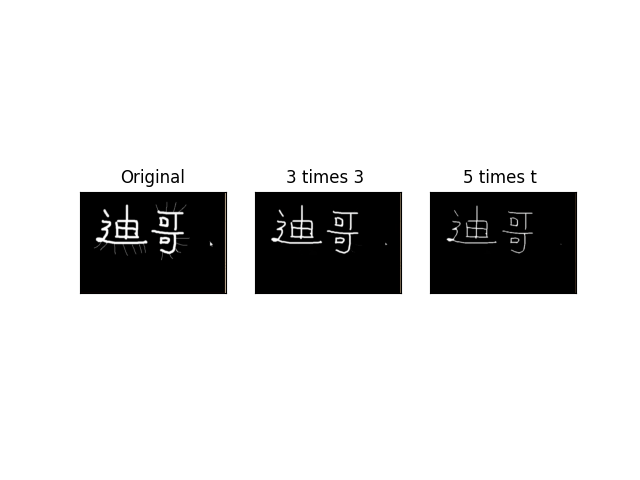
可以看到，核越大，就越会腐蚀图像！
下面看看图像迭代影响：
import cv2
import numpy as np
path="1.png"
img=cv2.imread(path)
kernel33=np.ones((3,3),np.uint8)
erosion1=cv2.erode(img,kernel33,iterations=1)
erosion2=cv2.erode(img,kernel33,iterations=2)
res=np.hstack((img,erosion1,erosion2))
cv2.imshow("comp",res)
cv2.imwrite("Iterator Diff comparasion.png",res)
cv2.waitKey(0)
import cv2
import numpy as np
from matplotlib import pyplot as plt
path="1.png"
img=cv2.imread(path)
kernel33=np.ones((3,3),np.uint8)
erosion1=cv2.erode(img,kernel33,iterations=1)
erosion2=cv2.erode(img,kernel33,iterations=2)
imgs_ero1=[img,erosion1,erosion2]
titles=['Original','1 ','2 ']
for i in range(3):
plt.subplot(1,3,i+1),plt.imshow(imgs_ero1[i],'gray')
plt.title(titles[i])
plt.xticks([]),plt.yticks([])
plt.show()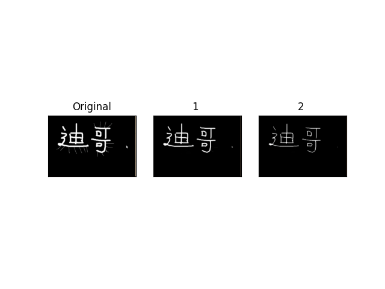
可以看见：越是迭代，图像腐蚀的越严重！
膨胀
这个操作可以视作腐蚀操作的反操作：就是将特征明显化：
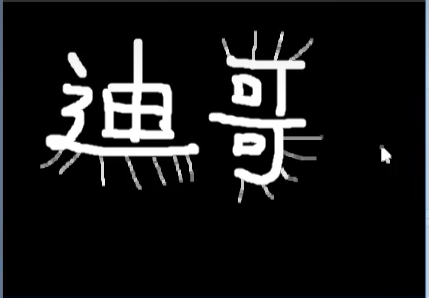
老规矩：还是看看改变核大小和迭代次数产生的效果如何：
先看核大小：
import cv2
import numpy as np
path="1.png"
img=cv2.imread(path)
kernel33=np.ones((3,3),np.uint8)
kernel55=np.ones((5,5),np.uint8)
dilate1=cv2.dilate(img,kernel33,iterations=1)
dilate2=cv2.dilate(img,kernel55,iterations=1)
res=np.hstack((img,dilate1,dilate2))
cv2.imshow("comp",res)
cv2.imwrite("kernel_in_dilate Diff comparasion.png",res)
import cv2
import numpy as np
from matplotlib import pyplot as plt
path="1.png"
img=cv2.imread(path)
kernel33=np.ones((3,3),np.uint8)
kernel55=np.ones((5,5),np.uint8)
dilate1=cv2.dilate(img,kernel33,iterations=1)
dilate2=cv2.dilate(img,kernel55,iterations=1)
titles=['org','3 times 3','5 times 5']
img_group=[img,dilate1,dilate2]
for i in range(3):
plt.subplot(1,3,i+1),plt.imshow(img_group[i],'gray')
plt.title(titles[i])
plt.xticks([]),plt.yticks([])
plt.show()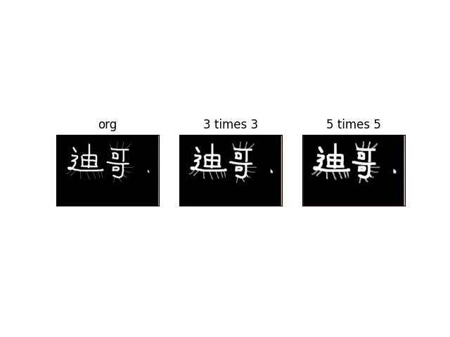
再来看看迭代器的影响：
import cv2
import numpy as np
from matplotlib import pyplot as plt
path="1.png"
img=cv2.imread(path)
kernel33=np.ones((3,3),np.uint8)
dilate1=cv2.dilate(img,kernel33,iterations=1)
dilate2=cv2.dilate(img,kernel33,iterations=2)
titles=['org','3 times 3','5 times 5']
img_group=[img,dilate1,dilate2]
for i in range(3):
plt.subplot(1,3,i+1),plt.imshow(img_group[i],'gray')
plt.title(titles[i])
plt.xticks([]),plt.yticks([])
plt.show() 还是很容易看出来：核越大，迭代次数越多，图片的特征就被放大的越明显！
扩展阅读1
版权声明：本文为CSDN博主「我有一個夢想」的原创文章，遵循CC 4.0 BY-SA版权协议，转载请附上原文出处链接及本声明。
原文链接：https://blog.csdn.net/B08370108/article/details/118028678
图像的腐蚀过程与图像的卷积操作类似，都需要模板矩阵来控制运算的结果，在图像的腐蚀和膨胀中这个模板矩阵被称为结构元素。与图像卷积相同，结构元素可以任意指定图像的中心点，并且结构元素的尺寸和具体内容都可以根据需求自己定义。定义结构元素之后，将结构元素的中心点依次放到图像中每一个非0元素处，如果此时结构元素内所有的元素所覆盖的图像像素值均不为0，则保留结构元素中心点对应的图像像素，否则将删除结构元素中心点对应的像素。图像的腐蚀过程示意图如图6-12所示，图6-12中左侧为待腐蚀的原图像，中间为结构元素，首先将结构元素的中心与原图像中的A像素重合，此时结构元素中心点的左侧和上方元素所覆盖的图像像素值均为0，因此需要将原图像中的A像素删除；当把结构元素的中心点与B像素重合时，此时结构元素中所有的元素所覆盖的图像像素值均为1，因此保留原图像中的B像素。将结构元素中心点依次与原图像中的每个像素重合，判断每一个像素点是否保留或者删除，最终原图像腐蚀的结果如图中下侧图像所示。
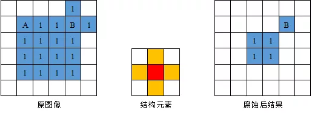
图像腐蚀可以用“Θ”表示，其数学表示形式如式(6.4)所示，通过公式可以发现，其实对图像A的腐蚀运算就是寻找图像中能够将结构元素B全部包含的像素点。
生成常用的矩形结构元素、十字结构元素和椭圆结构：
Mat getStructuringElement(int shape, Size ksize, Point anchor = Point(-1,-1));//shape：结构元素的种类，可以选择的参数及含义在表6-5中给出。
//ksize：结构元素的尺寸大小
//anchor：中心点的位置，默认参数为结构元素的几何中心点。 该函数用于生成图像形态学操作中常用的矩形结构元素、十字结构元素和椭圆结构元素。函数第一个参数为生成结构元素的种类，可以选择的参数及含义在表给出，函数第二个参数是结构元素的尺寸大小，能够影响到图像腐蚀的效果，一般情况下，结构元素的种类相同时，结构元素的尺寸越大腐蚀效果越明显。函数的最后一个参数是结构元素的中心点，只有十字结构元素的中心点位置会影响图像腐蚀后的轮廓形状，其他种类的结构元素的中心点位置只影响形态学操作结果的平移量。
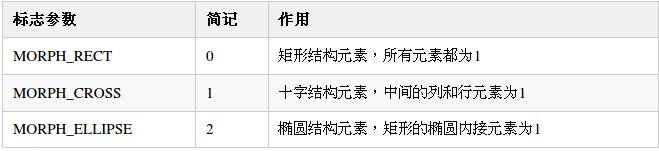
腐蚀函数
void erode( InputArray src,
OutputArray dst,
InputArray kernel,
Point anchor = Point(-1,-1), int iterations = 1,
int borderType = BORDER_CONSTANT,
const Scalar& borderValue = morphologyDefaultBorderValue()
);//src：输入的待腐蚀图像，图像的通道数可以是任意的，但是图像的数据类型必须是CV_8U，CV_16U，CV_16S，CV_32F或CV_64F之一。
//dst：腐蚀后的输出图像，与输入图像src具有相同的尺寸和数据类型。
//kernel：用于腐蚀操作的结构元素，可以自己定义，也可以用getStructuringElement()函数生成。
//anchor：中心点在结构元素中的位置，默认参数为结构元素的几何中心点
//iterations：腐蚀的次数，默认值为1。
//borderType：像素外推法选择标志，取值范围在表3-5中给出。默认参数为BORDER_DEFAULT，表示不包含边界值倒序填充。
//borderValue：使用边界不变外推法时的边界值。 该函数根据结构元素对输入图像进行腐蚀，在腐蚀多通道图像时每个通道独立进行腐蚀运算。
函数的第一个参数为待腐蚀的图像，图像通道数可以是任意的，但是图像的数据类型必须是CV_8U，CV_16U，CV_16S，CV_32F或CV_64F之一。
函数第二个参数为腐蚀后的输出图像，与输入图像具有相同的尺寸和数据类型。
函数第三个和第四个参数都是与结构元素相关的参数，第三个参数为结构元素，第四个参数为结构元素的中心位置，第四个参数的默认值为Point(-1,-1)，表示结构元素的几何中心处为结构元素的中心点。
函数第五个参数是使用结构元素腐蚀的次数，腐蚀次数越多效果越明显，参数默认值为1，表示只腐蚀1次。
函数第六个参数是图像像素外推法的选择标志，
第七个参数为使用边界不变外推法时的边界值，这两个参数对图像中主要部分的腐蚀操作没有影响，因此在多数情况下使用默认值即可。
需要注意的是该函数的腐蚀过程只针对图像中的非0像素，因此如果图像是以0像素为背景，那么腐蚀操作后会看到图像中的内容变得更瘦更小；如果图像是以255像素为背景，那么腐蚀操作后会看到图像中的内容变得更粗更大。
简单示例
//
// Created by smallflyfly on 2021/6/18.
//
#include "opencv2/opencv.hpp"
#include <iostream>
using namespace std;
using namespace cv;
void drawResult(Mat im, int num, Mat stats, Mat centroids, const string& name)
{
for (int i = 1; i < num; ++i)
{
int x = centroids.at<double>(i, 0);
int y = centroids.at<double>(i, 1);
cout << x << " " << y << endl;
circle(im, Point(x, y), 2, Scalar(0, 0, 255), -1);
int xmin = stats.at<int>(i, CC_STAT_LEFT);
int ymin = stats.at<int>(i, CC_STAT_TOP);
int w = stats.at<int>(i, CC_STAT_WIDTH);
int h = stats.at<int>(i, CC_STAT_HEIGHT);
Rect rect(xmin, ymin, w, h);
rectangle(im, rect, Scalar(255, 255, 255), 2);
putText(
im,
to_string(i),
Point(x+5, y),
FONT_HERSHEY_SCRIPT_SIMPLEX,
0.3,
Scalar(0, 0, 255),
1);
}
imshow(name, im);
}
int main() {
Mat src = (
Mat_<uchar>(6, 6) <<
0, 0, 0, 0, 255, 0,
0, 255, 255, 255, 255, 255,
0, 255, 255, 255, 255, 0,
0, 255, 255, 255, 255, 0,
0, 255, 255, 255, 255, 0,
0, 0, 0, 0, 255, 0
);
resize(src, src, Size(0, 0), 50, 50, INTER_NEAREST);
Mat m1, m2;
m1 = getStructuringElement(0, Size(3, 3));
m2 = getStructuringElement(1, Size(3, 3));
Mat erodeM1, erodeM2;
erode(src, erodeM1, m1, Point(-1, -1), 10);
erode(src, erodeM2, m2, Point(-1, -1), 10);
imshow("src", src);
imshow("erodeM1", erodeM1);
imshow("erodeM2", erodeM2);
Mat xbim = imread("xiaobai.jpg");
Mat xbM1, xbM2;
erode(xbim, xbM1, m1, Point(-1, -1), 2);
erode(xbim, xbM2, m2, Point(-1, -1), 2);
imshow("xb", xbim);
imshow("xbM1", xbM1);
imshow("xbM2", xbM2);
Mat im = imread("rice.jfif");
Mat im1 = im.clone();
Mat im2 = im.clone();
Mat im3 = im.clone();
Mat gray;
cvtColor(im, gray, CV_BGR2GRAY);
Mat riceBin;
threshold(gray, riceBin, 125, 255, THRESH_BINARY);
Mat out, stats, centroids;
int count1 = connectedComponentsWithStats(riceBin, out, stats, centroids, 8, CV_16U);
drawResult(im1, count1, stats, centroids, "no erode");
Mat erodeIm1, erodeIm2;
erode(riceBin, erodeIm1, m1, Point(-1, -1), 5);
erode(riceBin, erodeIm2, m2, Point(-1, -1), 5);
int count2 = connectedComponentsWithStats(erodeIm1, out, stats, centroids, 8, CV_16U);
drawResult(erodeIm1, count2, stats, centroids, "erode1");
int count3 = connectedComponentsWithStats(erodeIm2, out, stats, centroids, 8, CV_16U);
drawResult(erodeIm2, count3, stats, centroids, "erode2");
waitKey(0);
destroyAllWindows();
}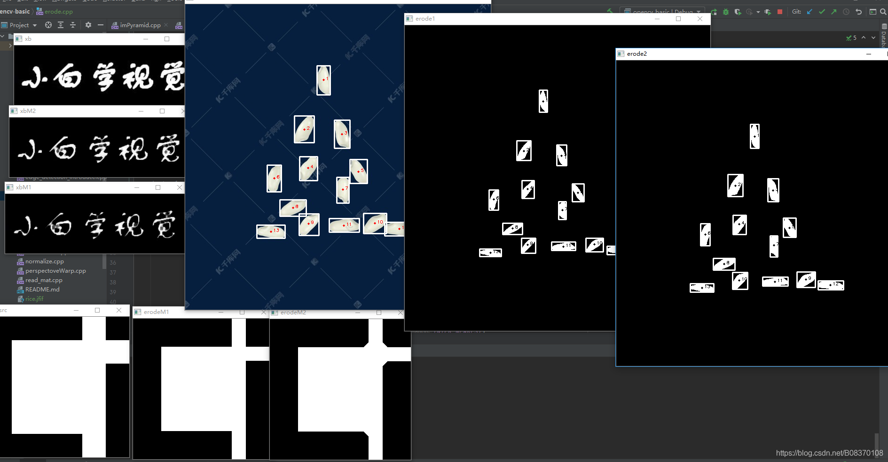
扩展阅读2
版权声明：本文为CSDN博主「我有一個夢想」的原创文章，遵循CC 4.0 BY-SA版权协议，转载请附上原文出处链接及本声明。
原文链接：https://blog.csdn.net/B08370108/article/details/118029682
图像的膨胀与图像腐蚀是一对相反的过程，与图像腐蚀相似，图像膨胀同样需要结构元素用于控制图像膨胀的效果。结构元素可以任意指定结构的中心点，并且结构元素的尺寸和具体内容都可以根据需求自己定义。定义结构元素之后，将结构元素的中心点依次放到图像中每一个非0元素处，如果原图像中某个元素被结构元素覆盖，但是该像素的像素值不与结构元素中心点对应的像素点的像素值相同，那么将原图像中的该像素的像素值修改为结构元素中心点对应点的像素值。图像的膨胀过程示意图如图所示，图中左侧为待膨胀的原图像，中间为结构元素，首先将结构元素的中心与原图像中的A像素重合，将结构元素覆盖的所有像素的像素值都修改为1，将结构元素中心点依次与原图像中的每个像素重合，判断是否有需要填充的像素。原图像膨胀的结果如图中右侧图像所示。
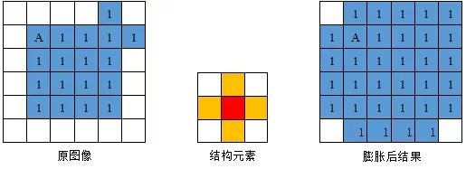
图像膨胀数学表示形式如式(6.5)所示，通过公式可以发现，其实图像A的膨胀运算就是生成能够将结构元素B全部包含的图像。
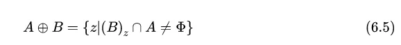
膨胀函数
void dilate(
InputArray src,
OutputArray dst,
InputArray kernel,
Point anchor = Point(-1,-1), int iterations = 1,
int borderType = BORDER_CONSTANT,
const Scalar& borderValue = morphologyDefaultBorderValue()
);//src：输入的待膨胀图像，图像的通道数可以是任意的，但是图像的数据类型必须是CV_8U，CV_16U，CV_16S，CV_32F或CV_64F之一。
//dst：膨胀后的输出图像，与输入图像src具有相同的尺寸和数据类型。
//kernel：用于膨胀操作的结构元素，可以自己定义，也可以用getStructuringElement()函数生成。
//anchor：中心点在结构元素中的位置，默认参数为结构元素的几何中心点
//iterations：膨胀的次数，默认值为1。
//borderType：像素外推法选择标志，取值范围在表3-5中给出。默认参数为BORDER_DEFAULT，表示不包含边界值倒序填充。
//borderValue：使用边界不变外推法时的边界值 该函数根据结构元素对输入图像进行膨胀，在膨胀多通道图像时每个通道独立进行膨胀运算。函数的第一个参数为待膨胀的图像，图像通道数可以是任意的，但是图像的数据类型必须是CV_8U，CV_16U，CV_16S，CV_32F或CV_64F之一。
函数第二个参数为膨胀后的输出图像，与输入图像具有相同的尺寸和数据类型。函数第三个和第四个参数都是与结构元素相关的参数，
第三个参数为结构元素，膨胀时使用的结构元素尺寸越大效果越明显，第四个参数为结构元素的中心位置，
第四个参数的默认值为Point(-1,-1)，表示结构元素的几何中心处为结构元素的中心点。
函数第五个参数是使用结构元素膨胀的次数，膨胀次数越多效果越明显，默认参数为1，表示只膨胀1次。
函数第六个参数是图像像素外推法的选择标志，
第七个参数为使用边界不变外推法时的边界值，这两个参数对图像中主要部分的膨胀操作没有影响，因此在多数情况下使用默认值即可。
简单示例
//
// Created by smallflyfly on 2021/6/18.
//
#include "opencv2/opencv.hpp"
#include <iostream>
using namespace cv;
using namespace std;
void drawResult(Mat im, int num, Mat stats, Mat centroids, const string& name) {
for (int i = 1; i < num; ++i) {
int x = centroids.at<double>(i, 0);
int y = centroids.at<double>(i, 1);
cout << x << " " << y << endl;
circle(im, Point(x, y), 2, Scalar(0, 0, 255), -1);
int xmin = stats.at<int>(i, CC_STAT_LEFT);
int ymin = stats.at<int>(i, CC_STAT_TOP);
int w = stats.at<int>(i, CC_STAT_WIDTH);
int h = stats.at<int>(i, CC_STAT_HEIGHT);
Rect rect(xmin, ymin, w, h);
rectangle(im, rect, Scalar(255, 255, 255), 2);
putText(
im,
to_string(i),
Point(x+5, y),
FONT_HERSHEY_SCRIPT_SIMPLEX,
0.3,
Scalar(0, 0, 255),
1);
}
imshow(name, im);
}
int main() {
Mat src = (
Mat_<uchar>(6, 6) <<
0, 0, 0, 0, 255, 0,
0, 255, 255, 255, 255, 255,
0, 255, 255, 255, 255, 0,
0, 255, 255, 255, 255, 0,
0, 255, 255, 255, 255, 0,
0, 0, 0, 0, 255, 0
);
resize(src, src, Size(0, 0), 50, 50, INTER_NEAREST);
Mat m1, m2;
m1 = getStructuringElement(0, Size(3, 3));
m2 = getStructuringElement(1, Size(3, 3));
Mat dilateM1, dilateM2;
dilate(src, dilateM1, m1, Point(-1, -1), 5);
dilate(src, dilateM2, m2, Point(-1, -1), 5);
imshow("src", src);
imshow("dilateM1", dilateM1);
imshow("dilateM2", dilateM2);
Mat xbim = imread("xiaobai.jpg");
Mat xbM1, xbM2;
dilate(xbim, xbM1, m1, Point(-1, -1), 2);
dilate(xbim, xbM2, m2, Point(-1, -1), 2);
imshow("xbim", xbim);
imshow("xbM1", xbM1);
imshow("xbM2", xbM2);
Mat im = imread("rice.jfif");
resize(im, im, Size(0, 0), 0.6, 0.6);
Mat im1 = im.clone();
Mat gray;
cvtColor(im, gray, CV_BGR2GRAY);
Mat riceBin;
threshold(gray, riceBin, 125, 255, THRESH_BINARY);
Mat out, stats, centroids;
int count1 = connectedComponentsWithStats(riceBin, out, stats, centroids, 8, CV_16U);
drawResult(im, count1, stats, centroids, "no dilate");
Mat dilateIm1, dilateIm2;
dilate(riceBin, dilateIm1, m1, Point(-1, -1), 5);
dilate(riceBin, dilateIm2, m2, Point(-1, -1), 5);
int count2 = connectedComponentsWithStats(dilateIm1, out, stats, centroids, 8, CV_16U);
drawResult(dilateIm1, count2, stats, centroids, "dilateIm1");
int count3 = connectedComponentsWithStats(dilateIm2, out, stats, centroids, 8, CV_16U);
drawResult(dilateIm2, count3, stats, centroids, "dilateIm2");
waitKey(0);
destroyAllWindows();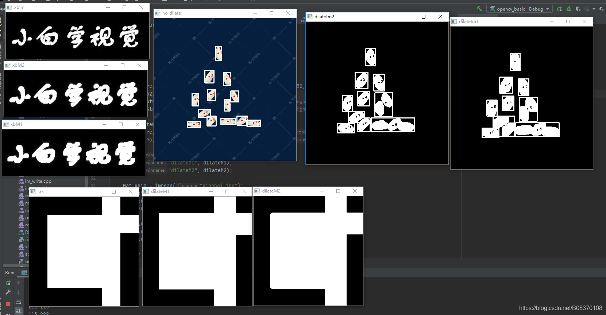
开运算与闭运算
刚刚我们整完了腐蚀和膨胀,现在我们一起用：
开运算指的是：先腐蚀后膨胀
闭运算指的是：先膨胀后腐蚀
import cv2
import numpy as np
from matplotlib import pyplot as plt
path = "1.png"
img = cv2.imread(path)
kernel33 = np.ones((3,3),np.uint8)
opening = cv2.morphologyEx(img,cv2.MORPH_OPEN,kernel33)
cv2.imshow("opening",opening)
closing = cv2.morphologyEx(img,cv2.MORPH_CLOSE,kernel33)
cv2.imshow("closing",closing)
cv2.imwrite("open.png",opening)
cv2.imwrite("close.png",closing)
cv2.waitKey(0) 开运算：
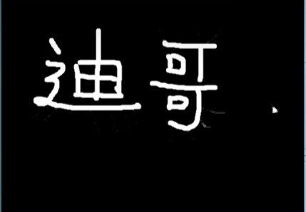
闭运算：
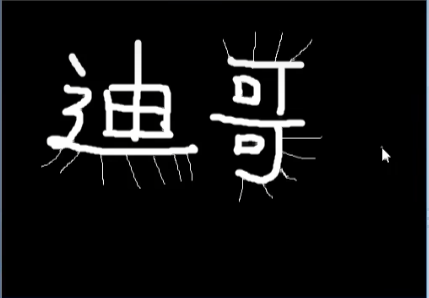
梯度运算
放大边界信息！很简单：膨胀的减去腐蚀的：
import cv2
import numpy as np
from matplotlib import pyplot as plt
path = "1.png"
img = cv2.imread(path)
kernel33 = np.ones((3,3),np.uint8)
gradient=cv2.morphologyEx(img,cv2.MORPH_GRADIENT,kernel33)
cv2.imshow("gra",gradient)
cv2.imwrite("gradient.png",gradient)
cv2.waitKey(0)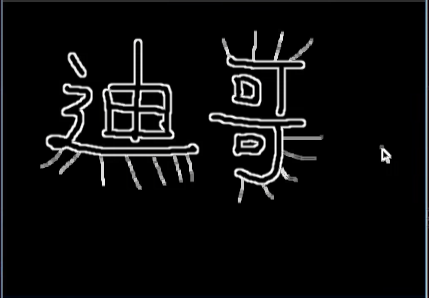
礼貌与黑帽
礼貌就是原始输入-开运算结果！
黑猫就是闭运算-原始输入！
import cv2
import numpy as np
from matplotlib import pyplot as plt
path = "1.png"
img = cv2.imread(path)
kernel33 = np.ones((3,3),np.uint8)
tophat=cv2.morphologyEx(img,cv2.MORPH_TOPHAT,kernel33)
blackhat=cv2.morphologyEx(img,cv2.MORPH_BLACKHAT,kernel33)
cv2.imshow("to",tophat)
cv2.imshow("bl",blackhat)
cv2.imwrite("tophat.png",tophat)
cv2.imwrite("blackhat.png",blackhat)
cv2.waitKey(0)tophat：

blackhat:
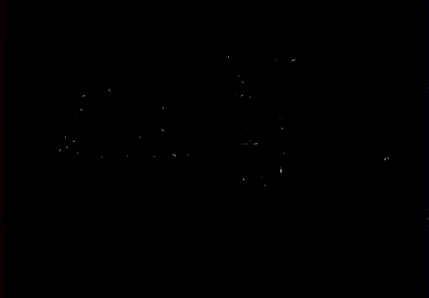
扩展阅读1
阅读链接：数字图像处理(c++ opencv)：形态学图像处理-开运算与闭运算 - 知乎 (zhihu.com)
开运算与闭运算
（1）开运算
原理方法：先腐蚀后膨胀；
功能作用：平滑物体轮廓、断开狭窄的狭颈、消除细长的突出和物体。
（2）闭运算
原理方法：先膨胀后腐蚀；
功能作用：弥合狭窄的狭颈或断裂处、消除小孔、填补轮廓缝隙。
#include<iostream>
#include<opencv2/opencv.hpp>
using namespace cv;
using namespace std;
int main()
{
Mat image, image_gray, image_bw; //定义输入图像，灰度图像，二值图像
image = imread("开运算闭运算.png"); //读取图像；
if (image.empty())
{
cout << "读取错误" << endl;
return -1;
}
imshow("image", image);
//转换为灰度图像
cvtColor(image, image_gray, COLOR_BGR2GRAY);
//转换为二值图
threshold(image_gray, image_bw, 120, 255, 1); //通过0，1调节二值图像背景颜色
imshow("image_bw", image_bw);
//闭运算
Mat se = getStructuringElement(0, Size(3, 3)); //构造矩形结构元素
dilate(image_bw, image_bw, se, Point(-1, -1), 5); //执行膨胀操作
erode(image_bw, image_bw, se, Point(-1, -1), 5); //执行腐蚀操作
//开运算
//Mat se = getStructuringElement(0, Size(3, 3)); //构造矩形结构元素
//erode(image_bw, image_bw, se, Point(-1, -1), 2); //执行腐蚀操作
//dilate(image_bw, image_bw, se, Point(-1, -1), 2); //执行膨胀操作
imshow("image_bw", image_bw);
waitKey(0); //暂停，保持图像显示，等待按键结束
return 0;
}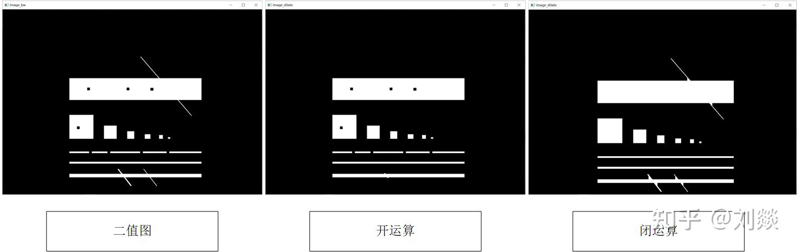
除了使用腐蚀膨胀的函数组合来进行开运算闭运算，还可以通过opencv函数进行处理（morphologyex函数）
扩展阅读2
版权声明：本文为CSDN博主「念980」的原创文章，遵循CC 4.0 BY-SA版权协议，转载请附上原文出处链接及本声明。
原文链接：https://blog.csdn.net/weixin_62343847/article/details/122604497
腐蚀与膨胀
图像的腐蚀与膨胀互为逆向操作，通常用于处理二值图像（黑白图，以黑色为底面背景），因此需要先进行二值化处理，腐蚀和膨胀通俗的理解就是，在指定大小的卷积核内，如果该卷积核内全为黑色或全为白色，则该卷积核内像素值不变，但若是既有黑色又有白色，即在图像边缘处，那么膨胀操作则会将该卷积核内所有白色像素点都赋值变为黑色，以此将图像向内腐蚀掉一圈，而膨胀操作则相反，会将卷积核内的黑色像素点赋值成2白色，以此让图像膨胀一圈。
膨胀与腐蚀的函数介绍
kernel = np.ones((3,3),uint8) #定义要处理的卷积核大小和卷积核的类型。erosion = cv2.erode(img_test3,kernel,iterations = 1)
#对图像进行膨胀操作，img_test是要进行处理的图像，kernel是通过上一个函数定义好的卷积核，而iterations则是腐蚀操作的循环次数（可以将卷积核设置为（1，1），然后不断调整循环次数来实现精细化的腐蚀，以达到更好的腐蚀效果）。dilate_1 = cv2.dilate(img_test,kernel,iterations = 1)
#对图像进行膨胀操作，这里的参数跟上面的参数作用一样，只是改了函数名而已。（同样可以将卷积核设置为（1，1），不断改变循环次数，以达到更好的膨胀效果）。 应用：腐蚀操作一般用于消去图像中不需要的粘连部分，而膨胀操作则用于填充图像内的空白部分，同时也可以恢复图像由于进行腐蚀操作后缩小的面积，在下面的代码实例中会有体现。
代码实例
import cv2#导入包
import numpy as np
import matplotlib.pyplot as plt
img_test3 = cv2.imread("test3.png")#读入图像
cv2.imshow("test3",img_test3)#展示图片
cv2.waitKey(0)
cv2.destroyAllWindows()#关闭窗口
kernel = np.ones((3,3),np.uint8)#设定处理的内核
erosion = cv2.erode(img_test3,kernel,iterations = 1)#腐蚀操作
cv2.imshow("erosion",erosion)#展示图片
cv2.waitKey(0)
cv2.destroyAllWindows()#关闭窗口
pie = cv2.imread("pie.png")
cv2.imshow("pie",pie)
cv2.waitKey(0)
cv2.destroyAllWindows()
kernel = np.ones((30,30),np.uint8)#设定要处理的内核大小
erosion_1 = cv2.erode(pie,kernel,iterations = 1)#循环腐蚀1次
erosion_2 = cv2.erode(pie,kernel,iterations = 2)#循环腐蚀2次
erosion_3 = cv2.erode(pie,kernel,iterations = 3)#循环腐蚀3次
All = np.hstack((erosion_1,erosion_2,erosion_3))#拼接图像
cv2.imshow("All",All)
cv2.waitKey(0)
cv2.destroyAllWindows()
img_test3 = cv2.imread("test3.png")
cv2.imshow("test3",img_test3)
cv2.waitKey(0)
cv2.destroyAllWindows()
kernel = np.ones((3,3),np.uint8)#设定要处理的内核大小
erosion_test3 = cv2.erode(img_test3,kernel,iterations = 1)#腐蚀图像
cv2.imshow("erosion_test3",erosion_test3)#展示腐蚀后的图像
cv2.waitKey(0)
cv2.destroyAllWindows()#关闭窗口
dilate_test3 = cv2.dilate(erosion_test3,kernel,iterations = 1)#对腐蚀过的图像进行膨胀处理
cv2.imshow("dilate",dilate_test3)#展示膨胀后的图像
cv2.waitKey(0)
cv2.destroyAllWindows()#关闭窗口
kernel = np.ones((30,30),np.uint8)#设定要处理的内核大小
dilate_1 = cv2.dilate(pie,kernel,iterations = 1)#循环膨胀一次后的图像
dilate_2 = cv2.dilate(pie,kernel,iterations = 2)#循环膨胀两次后的图像
dilate_3 = cv2.dilate(pie,kernel,iterations = 3)#循环膨胀三次后的图像
All = np.hstack((dilate_1,dilate_2,dilate_3))#拼接以上三幅图像
cv2.imshow("All",All)#展示图片
cv2.waitKey(0)
cv2.destroyAllWindows()#关闭窗口 运行结果
这是原图，可以看到上面有一些多出来的粘连部分
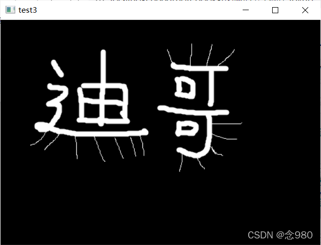
进行腐蚀操作后的图像，可以看到，我们用腐蚀操作成功去除了边缘的粘连部分，但同时字体笔画也由于受到了腐蚀而变细了
对上图进行膨胀操作，可以看到，我们恢复了被腐蚀前笔画的粗细，同时也去除掉了原图的粘连部分，这种操作称为开运算，能够在尽量不改变原图的情况下去除图像的粘连。（在下面会有详细的介绍）
以下是循环腐蚀1~3次之后的图像对比

以下是循环膨胀1~3次之后的图像对比
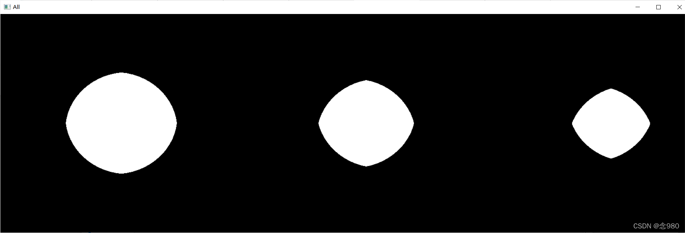
通过上面两幅图可以看出，不管是腐蚀还是膨胀，都不是等比例的进行，它们最终都会趋近于矩形（因为卷积核就是矩形的），并且进行腐蚀再膨胀后的图像跟原图是存在细微差别的，比如中间的部分空洞可能已经消失了等等。
开运算和闭运算
所谓开运算在上面的代码其实已经使用过了，只是opencv本身便带有可以进行腐蚀后再膨胀的函数，不需要我们自己写那么多代码。开运算在原图的基础上就是用于消除图像的一些粘连部分的一种方式。
而闭运算则相反，是先进行膨胀，再进行腐蚀的一种操作。它主要用于填充图像中的空洞部分，在opencv中同样有一个专门的函数进行闭运算。
函数介绍
opening = cv2.morphologyEx(img_test3,cv2.MORPH_OPEN,kernel)
#开运算，img_test3是要进行处理的图片，cv2.MORPH_OPEN表示要进行的是开运算（先腐蚀后膨胀），kernel则跟上面的函数一样，是定义好的卷积核。 closing = cv2.morphologyEx(img_test3,cv2.MORPH_CLOSE,kernel)
#闭运算，这里的函数参数跟上一个函数作用一样，cv2.MORPH_OPEN表示要进行的是闭运算（先膨胀后腐蚀）。代码实例
import cv2
import numpy as np
import matplotlib.pyplot as plt
img_test3 = cv2.imread("test3.png")#读入图像
cv2.imshow("test3",img_test3)#展示图片
cv2.waitKey(0)
cv2.destroyAllWindows()#关闭窗口
kernel = np.ones((3,3),np.uint8)#设定要处理的内核大小
opening = cv2.morphologyEx(img_test3,cv2.MORPH_OPEN,kernel)#开运算，先腐蚀后膨胀，能够去除图像中粘连的部分
cv2.imshow("open",opening)
cv2.waitKey(0)
cv2.destroyAllWindows()
kernel = np.ones((3,3),np.uint8)#设定要处理的卷积核大小
closing = cv2.morphologyEx(img_test3,cv2.MORPH_CLOSE,kernel)#闭运算，先膨胀后腐蚀，能够填补图像中间的空隙
cv2.imshow("close",closing)
cv2.waitKey(0)
cv2.destroyAllWindows()运行结果
开运算:
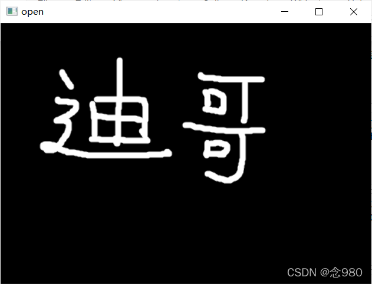
闭运算：效果不明显，但是如果该图像中间有空洞存在，那么我们可以明显的看到空洞被填上了。
梯度运算
原理：将图像分别进行膨胀和腐蚀，然后两者相减，则可以得到该图像的轮廓，而opencv中同样提供了进行梯度运算的函数。
函数介绍
gradient = cv2.morphologyEx(pie,cv2.MORPH_GRADIENT,kernel)
#这里的pie是将要进行处理的二值图像，cv2.MORPH_GRADIENT表示进行梯度运算，kernel则是定义好的卷积核。 代码示例
import cv2
import numpy as np
import matplotlib.pyplot as plt
pie = cv2.imread("pie.png")
cv2.imshow("pie",pie)#展示原图
cv2.waitKey(0)
cv2.destroyAllWindows()#关闭窗口
#梯度运算，通过膨胀减去腐蚀得到轮廓
kernel = np.ones((3,3),np.uint8)#设定卷积核大小
gradient = cv2.morphologyEx(pie,cv2.MORPH_GRADIENT,kernel)#梯度运算
cv2.imshow("gradient",gradient)#展示处理后的图像
cv2.waitKey(0)
cv2.destroyAllWindows()#关闭窗口 运行结果
原图
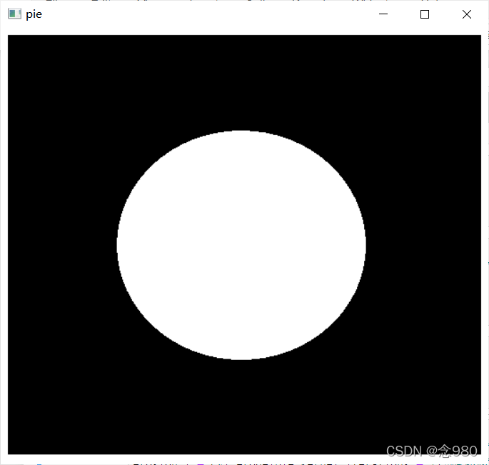
处理后得到的图像轮廓
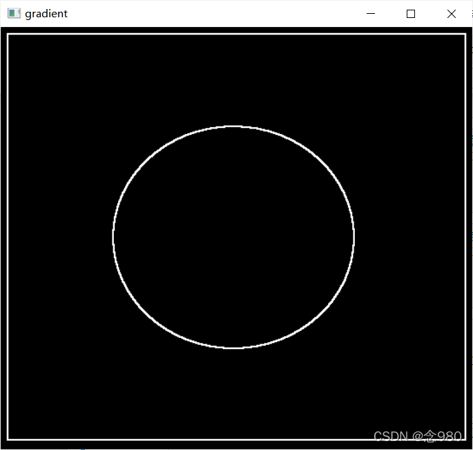
礼帽与黑帽
礼帽：将图像先进行开运算，再以原始图像减去开运算的结果，我们就可以得到图像被腐蚀掉的粘连部分，或者说原图中灰度较亮的区域，所以也称白顶帽变换。
黑帽：将图像先进行闭运算，再将闭运算的结果减去原始图像，作用我们就可以得到原图像中被填充的空洞部分，也就是图像中件较暗的空洞区域，所以又称黑底帽变换。
函数介绍
tophat = cv2.morphologyEx(img_test3,cv2.MORPH_TOPHAT,kernel)
#礼帽运算，cv2.MORPH_TOPHAT表示进行的是礼帽运算，即原图像-开运算。blackhat = cv2.morphologyEx(img_test3,cv2.MORPH_BLACKHAT,kernel)
#黑帽运算，cv2.MORPH_BLACKHAT表示进行的是黑帽运算，即闭运算-原图像。 代码示例
import cv2
import numpy as np
import matplotlib.pyplot as plt
img_test3 = cv2.imread("test3.png")#读入图像
cv2.imshow("test3",img_test3)#展示图片
cv2.waitKey(0)
cv2.destroyAllWindows()#关闭窗口
#礼帽，原始图像-开运算，得到的就是被腐蚀掉的粘连部分
kernel = np.ones((3,3),np.uint8)#设定卷积核大小
tophat = cv2.morphologyEx(img_test3,cv2.MORPH_TOPHAT,kernel)#礼帽运算
cv2.imshow("tophat",tophat)
cv2.waitKey(0)
cv2.destroyAllWindows()
#黑帽运算，闭运算-原始图像，得到的是膨胀之前原始图像中比较暗的部分，即中间的空洞
kernel = np.ones((7,7),np.uint8)#设定卷积核大小
blackhat = cv2.morphologyEx(img_test3,cv2.MORPH_BLACKHAT,kernel)#黑帽运算
cv2.imshow("blackhat",blackhat)
cv2.waitKey(0)
cv2.destroyAllWindows() 运行结果
原图
礼帽，可以看到图像粘连部分被剔除出来了
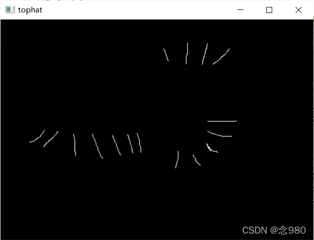
黑帽，我们得到了迪哥中间微小的空洞部分
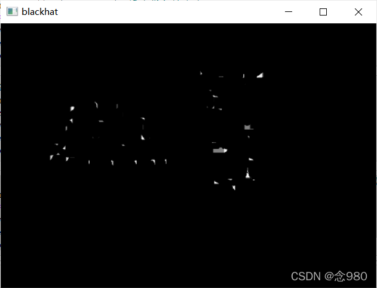